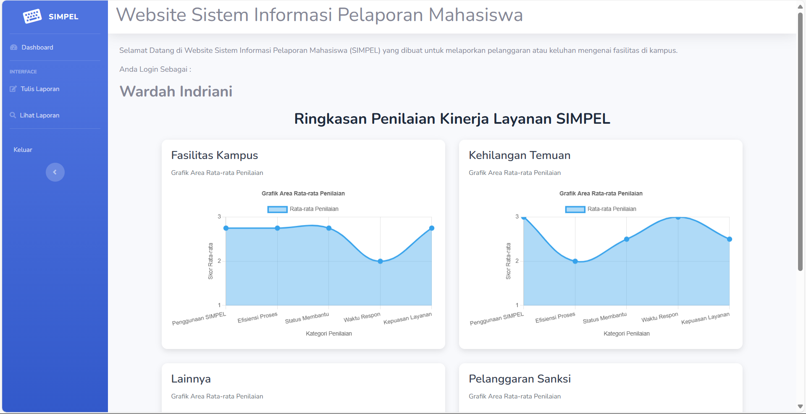
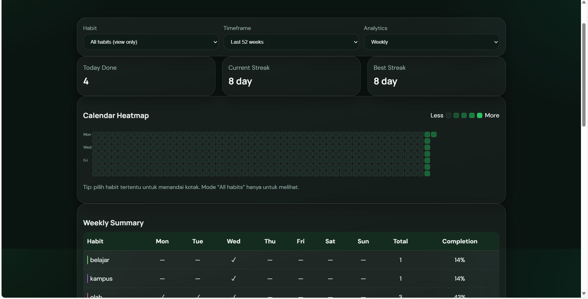
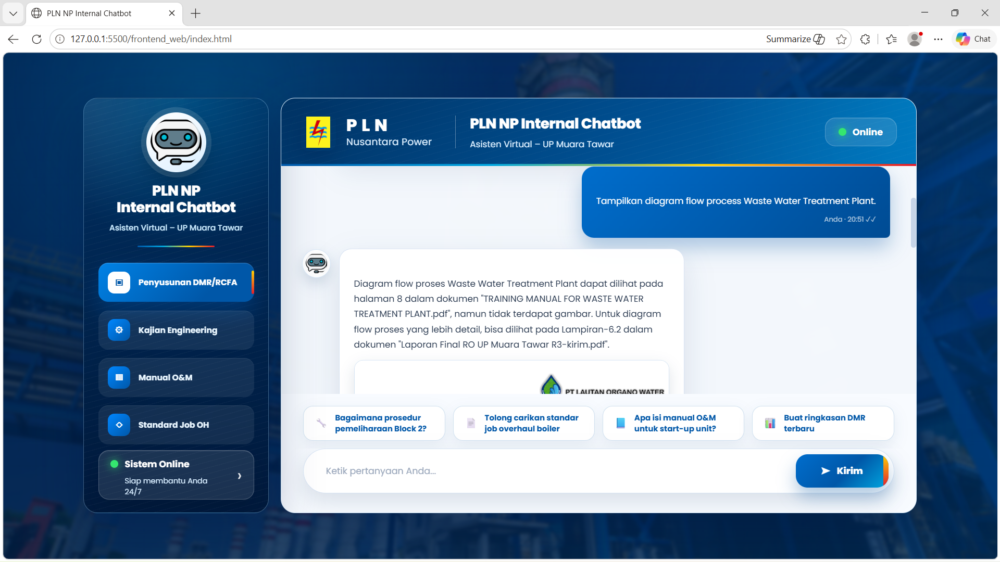
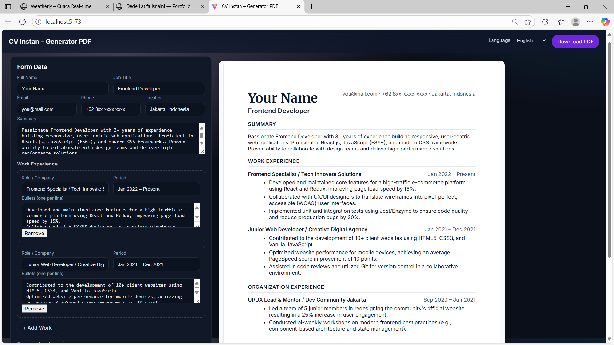
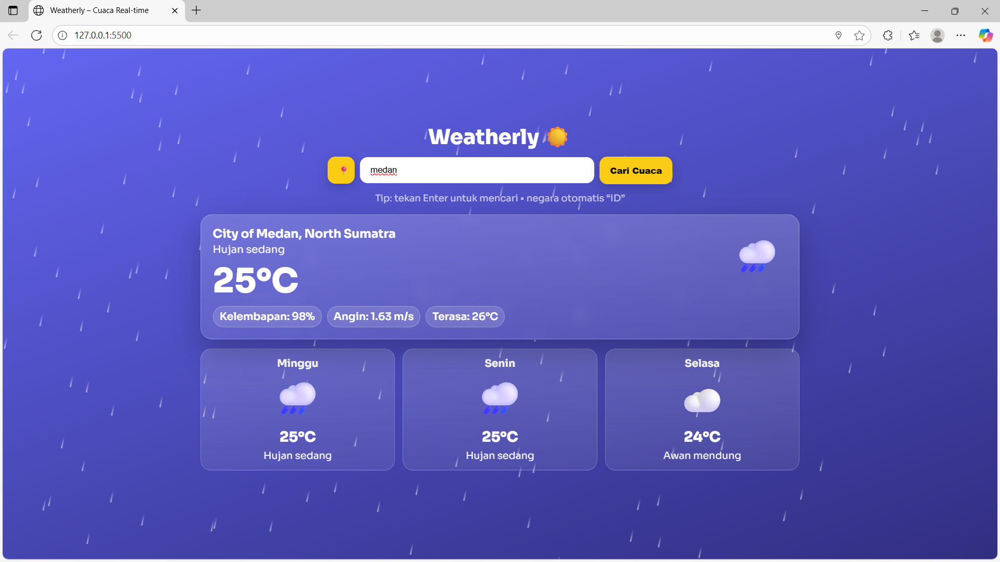
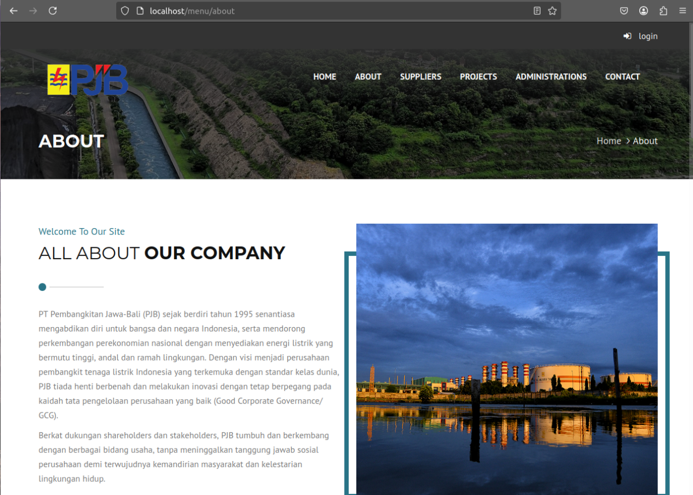

IT Infrastructure & Support
- Managing and maintaining IT infrastructure, including OS configuration (Linux/Ubuntu) and virtualization environments.
- Performing network troubleshooting and technical support to ensure smooth system operations.
WELCOME TO MY PORTFOLIO
Optimizing IT operations and web performance to deliver reliable, efficient, and scalable digital solutions.
I am an Informatics Engineering student at UIN Syarif Hidayatullah Jakarta
with a strong passion for IT Infrastructure and Web Engineering.
My core focus is on ensuring system reliability, network performance, and operational efficiency through
effective troubleshooting and infrastructure management.
With practical experience in server environments (Linux/Ubuntu), network support, and full-stack web development,
I bridge the gap between technical operations and functional software solutions.
I am eager to leverage my analytical skills to ensure seamless IT services and contribute to robust, scalable operational workflows.
My Works



Engineered an intelligent Retrieval-Augmented Generation (RAG) system to provide accurate, context-aware answers from a specific knowledge base. Integrated open-source Large Language Models (LLMs) with a vector database (ChromaDB) to enhance information retrieval performance, significantly reducing hallucination rates in complex Q&A scenarios.

Built a dynamic PDF CV generator application that automates document layout and formatting. Features include a user-friendly form interface, real-time data processing, and bilingual support (English/Indonesian), providing a seamless experience for creating professional, well-structured resumes.

Developed a real-time weather monitoring application that integrates third-party APIs to deliver live meteorological data. Engineered a dynamic UI that adapts to weather conditions and implemented efficient data handling to ensure accurate geocoding and local caching, demonstrating strong capabilities in system integration and responsive web development.

Developed and maintained a core internal procurement system using Laravel, focused on optimizing data transaction workflows and administrative reporting. Engineered robust database logic and backend controllers to ensure data integrity and system reliability, directly supporting operational efficiency for internal stakeholders at PLN Nusantara Power.
Learning Path
Maintained internal IT systems and performed network troubleshooting to ensure operational continuity. Collaborated with the infrastructure team to enhance network security and system efficiency. Additionally, led the development and optimization of the internal procurement website to improve data integration and information accessibility.
Orchestrated technical weekly sessions on AI/ML, coordinating mentors and operational logistics to ensure an effective, structured, and interactive learning environment.
Facilitated corporate-level logistics for a tech company visit, managing participant coordination and external communication to ensure seamless event execution.
Collaborated in the events team to organize tech seminars and workshops, focusing on fostering an environment that supports student skill growth in IT
Engaged in intensive training in modern web development (React.js, Tailwind CSS), emphasizing production-ready code, responsive design, and industry best practices.
Studied interface and UX fundamentals, applying user-centered design principles to develop practical, functional, and visually accessible projects."
Bachelor’s Degree — Informatics Engineering